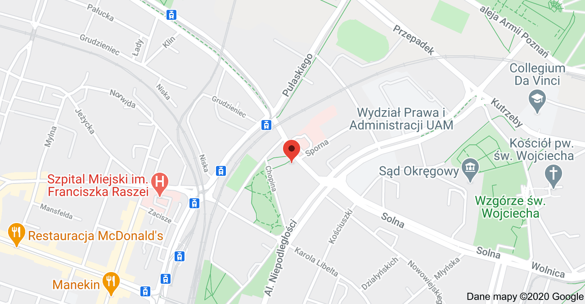

Absolwent „Dwójki” II Liceum Ogólnokształcące w Poznaniu - naprawdę fajna szkoła
Parafrazując Johna F. Kennedy'ego
Nie pytam, co inni mogą zrobić dla mnie, ale pytam, co ja mogę zrobić dla innych
O mnie
Poznańczyk od kilkunastu pokoleń z wszystkimi tego wadami. Jestem trochę łasuch, trochę z Bałkańską duszą, mały podróżnik lubiący czasami "off the beaten tracks”. Zainteresowany współczesną historią polityczno-społeczną. Czasami uparciuch, z czasami "niewyparzonym językiem", jak przystało na Byka. Zdarzyło mi się współpracować przez kilka lat z Janiną Ochojską oraz Polską Akcją Humanitarną jako wolontariusz i było to fajne doświadczenie. Uwielbiam: Louisa de Funes, Absolutely Fabulous, Keeping Up Appearances no i "Wojnę domową"
Absolwent wydziału Prawa i Administacji na Uniwersytecie Adama Mickiewicza w Poznaniu
Od 2003 roku adwokat w Wielkopolskiej Izbie Adwokackiej w Poznaniu
Usługi
- Porady prawne i pisma
- Przygotowanie i analiza umów
- Reprezentowanie stron przed Organami ścigania, Sądami, Urzędami w trakcie mediacji
- Możliwość stałej obsługi prawnej

Prawo karne i wykroczeń
Prawo cywilne
Prawo rodzinne i opiekuńcze
Prawo spadkowe
Prawo administracyjne
Przepisy dotyczące cudzoziemców
Kontakt

KANCELARIA ADWOKACKA RAFAŁ TUSZEWSKI
UL. FELIKSA NOWOWIEJSKIEGO 57 LOK. 2
61-734 POZNAŃ
NIP: 7791212876
TEL.: +48 509 968 834
EMAIL: ramatu@poczta.onet.pl
Kontakt możliwy w językach:
Polskim, English, Hrvatski, Bosanski,
Srpski, Crnogorski oraz Pусский